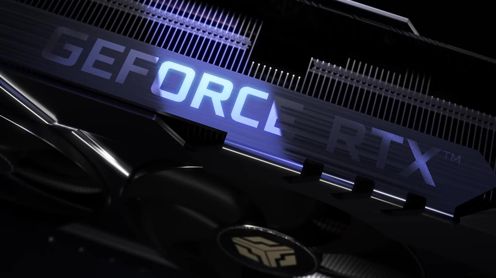
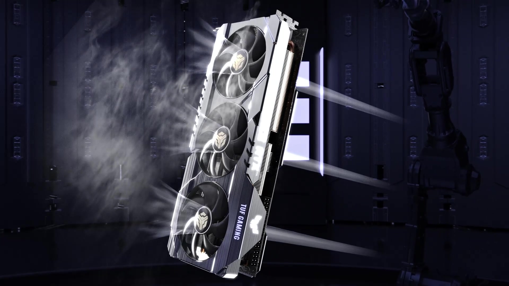
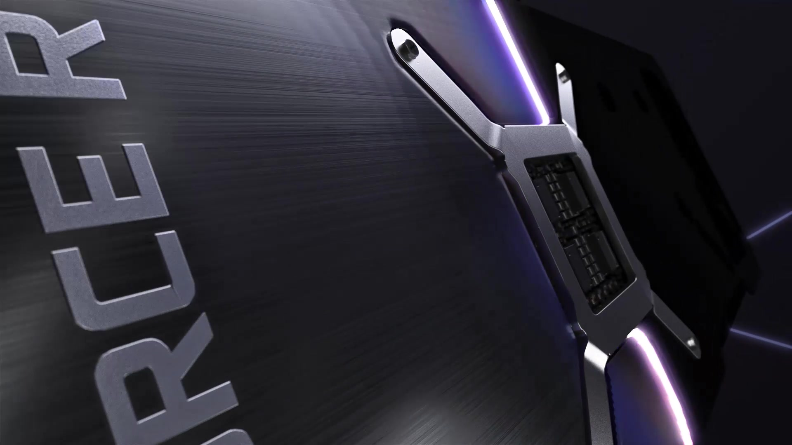

PROJECT 002 / PRODUCT MOTION
显卡动画
Graphics Card · Motion Visual
硬件质感 / 镜头运动 / 动画节奏
以硬朗结构与冷色光影构建科技感，通过近景、旋转与空间运动，让产品细节在镜头切换中逐步呈现。
镜头与细节
SELECTED FRAMES / 02—04


FORM & MOTION
以光影建立质感，以镜头赋予结构节奏。
Graphics Card · Motion Visual
硬件质感 / 镜头运动 / 动画节奏
以硬朗结构与冷色光影构建科技感，通过近景、旋转与空间运动，让产品细节在镜头切换中逐步呈现。



以光影建立质感，以镜头赋予结构节奏。